of serious highway accidents involve fatigue, according to road safety studies.
OTTO Vigilant
Autonomous project for Volkswagen do Brasil
A copilot that
A copilot that
prevents fatigue
How the voice assistant of a carmaker can evolve from reactive to proactive, using technology that already exists today.
About this case
A project I started on my own, for Volkswagen do Brasil. Nobody asked for it: I saw the launch of OTTO and wanted to show how it could protect drivers. It is a non-profit concept for study and portfolio, with no official link with Volkswagen or the OTTO team, and the brand fonts were replaced by Outfit. Everything here was designed and built by me, from the research to the code.
Fatigue at the wheel, and alerts nobody trusts
Fatigue is behind up to 20% of serious highway accidents worldwide. Driver Monitoring Systems have existed for more than a decade, but two problems keep them from saving lives.
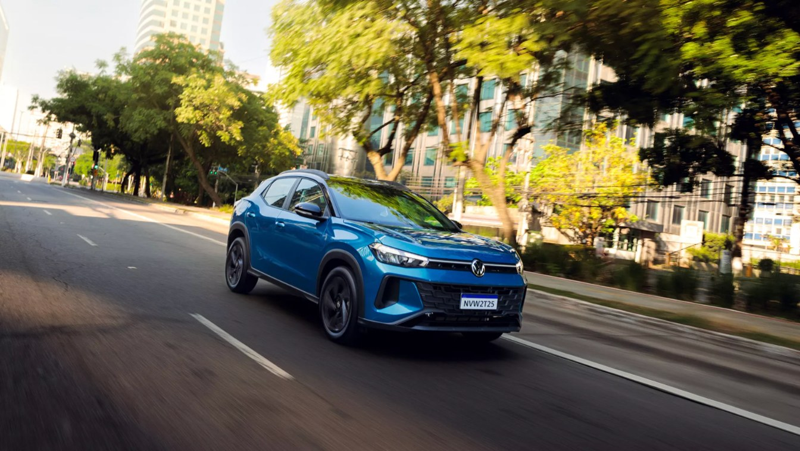
Photo: Volkswagen do BrasilLow acceptance
Drivers turn off alerts that are irritating or generic.
Wrong interfaces
Aggressive alarms raise stress instead of helping.
Regulation as a catalyst
DDAW is mandatory in Europe since 2024, and ADDW arrives in 2026 under the GSR. In-cabin monitoring became inevitable.
Three pillars the industry is converging on
AI as safety-critical
AI is no longer a passive assistant. It is an active safety component, fusing camera, radar and LiDAR to decide in real time.
Level 2+ and Level 3 automation
Advanced driver assistance is spreading. The car can take over for a while on highways, but still needs the driver watching.
In-cabin monitoring as a standard
Premium brands already use infrared cameras to track attention, fatigue and distraction, with algorithms that cut false positives.
OTTO already talks. It can also protect.
In October 2025, Volkswagen do Brasil launched OTTO, the first national generative automotive AI, built into VW Play. It reads voice commands, explains the manual and suggests maintenance. That opens a clear window: evolve OTTO from a reactive assistant into a proactive copilot, using the same sensors regulation already requires, without losing the warm tone of the brand.
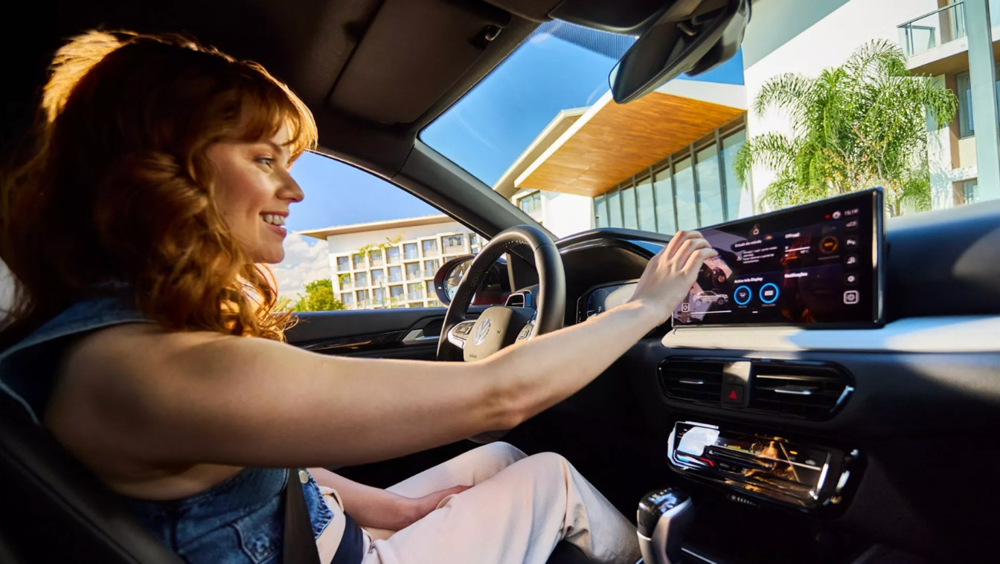
Photo: Volkswagen do BrasilProject goal
Investigate, conceive and prototype an OTTO that detects fatigue, stress and distraction, steps in gradually and, in critical cases, takes control of the vehicle to reduce the risk of an accident.
What I wanted to learn, and to protect
Recognize fatigue early
Help drivers notice it before it becomes critical, especially rideshare and long-distance drivers.
Gradual interventions
Voice, then visual, then haptic, then active control, without adding distraction or rejection.
Care, not surveillance
The driver keeps the final say over privacy and decisions.
Research questions
- When do drivers notice their own tiredness, and when do they stop noticing?
- How do they react today to fatigue alerts (beeps, lights) in existing systems?
- Which language and tone of voice make an assistant that suggests stopping the car more acceptable?
- Which visual and sound signals fit each risk level without causing panic?
- How do drivers feel about a system that can take control of the vehicle in an emergency?
Regulation, technology and benchmarks
European Union · GSR 2026
DDAW systems that watch visual signs of inattention and drowsiness, with visual, sound and haptic alerts in steps.
China · Beijing rules, 2024 to 2026
Support for Level 2+ and Level 3 vehicles, with safety verification and driver monitoring requirements.
USA · NHTSA
Guidelines for Level 2 driver assistance that require a DMS to keep the driver attentive.
Detection technology
- Deep learning on low-cost RGB cameras reaches 90%+ accuracy.
- PERCLOS: eyelid closure time above 0.8 seconds.
- Blink and yawn frequency, head tilt and gaze drift.
- Facial micro-expressions.
Multimodal fusion is the state of the art
Camera, telemetry and voice together. Driving data, like steering corrections and lane variation, is combined with the visual analysis. It is the model I followed for the risk engine.
Four systems, one gap
I analyzed four existing systems. None of them uses empathetic voice plus generative AI to negotiate a break. All of them use binary alerts, like “Take a break”.
| System | Signals analyzed | Alert type | Event log | Central integration |
|---|---|---|---|---|
| Mercedes MBUX (DMS) | Eyes, blinks, head | Visual + Sound + Haptic | Yes (local) | No |
| BMW iDrive 9 (DMS) | Eyes, posture, reaction time | Visual + Sound | Yes (local) | No |
| Seeing Machines (fleets) | Eyes, head, yawns, telemetry | Visual + Sound + Notification | Yes (cloud) | Yes (fleet manager) |
| Volvo Driver Alert | Telemetry (steering corrections) | Sound + icon on the panel | No | No |
Key insight: nobody negotiates. Every system just tells the driver to stop.
VW Play as the hub for a safety module
VW Play centralizes navigation, media, apps and notifications on a 10 or 12 inch touch screen, with Android Auto and Apple CarPlay. The opportunity is a proactive safety module inside it. When it detects fatigue, OTTO Vigilant steps in with a clear visual hierarchy, lowering cognitive load and the risk of an accident.
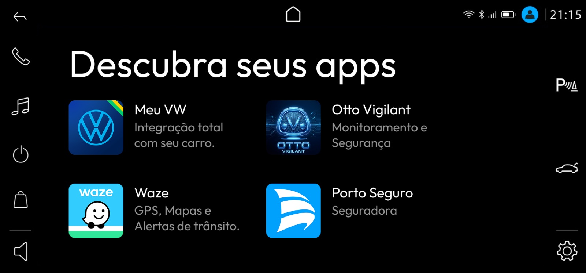
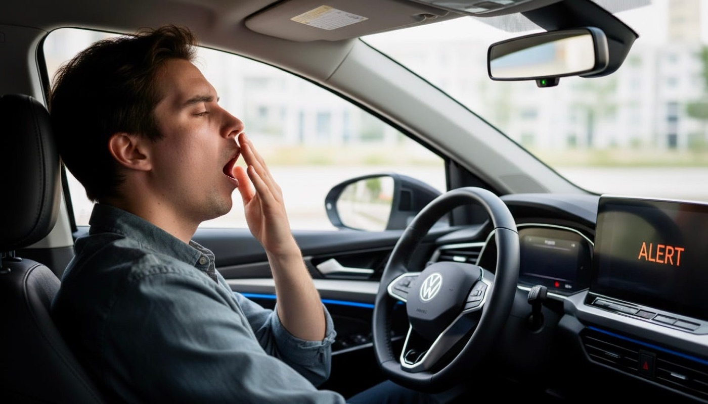
12 drivers, three profiles
Semi-structured interviews with a 15-question script about near-accident stories, past experiences with alert systems and tone of voice preferences.
10 to 14 hours a day
Financial pressure to keep driving while tired.
“I know I’m sleepy, but if I stop now I won’t hit my goal. The app doesn’t understand that.”
Monotony and micro-sleep
Highway monotony, especially at night, and micro-sleep without noticing.
“You don’t notice you slept. Suddenly you ‘wake up’ 5 km later and don’t remember passing there.”
Lower risk perception
Driving after parties and anxiety at the wheel.
“I didn’t know crying while driving is dangerous. I thought it was only about not drinking.”
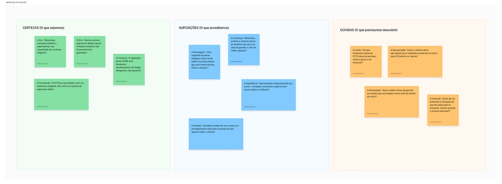
A 10-hour shift of a rideshare driver
From the interviews I built a typical journey. It shows when attention fades, and where OTTO should step in.
0 – 2h
High attention
Start of the shift.
2 – 5h
Growing monotony
First yawns appear.
5 – 7h
Moderate fatigue
Distance miscalculations.
7 – 10h
Critical zone
Micro-sleep and abrupt steering corrections.
After 2 continuous hours
A light suggestion for a break.
After 5 hours plus camera signs
A strong recommendation.
Micro-sleep detected
Critical intervention: alert plus control.
What the research said
Generic alerts are ignored
Drivers do not trust “Take a break” without context.
Alarmist language backfires
“ATTENTION! FATIGUE DETECTED!” causes panic or disbelief.
Nobody wants to be watched
But they accept help, as long as they feel in control of privacy and of the final decision.
Conditional acceptance of control
9 of 12 interviewees would let the car take control if they were truly asleep.
The challenge: a tired driver at 100 km/h, with only a few seconds before a critical situation.
Design problem
How can OTTO use multimodal monitoring data (voice, camera, driving) to negotiate breaks clearly, respectfully and effectively and, when fatigue is critical and the risk is imminent, take control of the vehicle safely, without making the driver feel punished or stripped of autonomy?
Sensors, a risk engine and OTTO as the experience layer
VW-IMS, the cabin camera
An infrared camera tracks eyes, eyelids, head and facial expressions. Edge AI runs on the vehicle, with latency under 100 ms, which also protects privacy. Aligned with DDAW and Euro NCAP 2026.
Fatigue Voice Model
Analyzes the OTTO microphone for slurred speech, long pauses, hesitation, emotional tone and audible yawns. A fine-tuned Whisper-class model trained on speech under fatigue.
Multimodal risk engine
Fuses the visual score, the voice score and telemetry (lane changes, steering corrections, speed, time driving) into one real-time level.
OTTO, the experience layer
Reads the level and orchestrates the intervention, the tone of voice and the vehicle actions: temperature, lights, stop routes, ADAS.
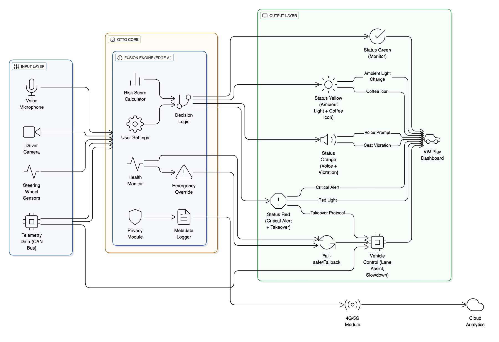
See the full decision flow
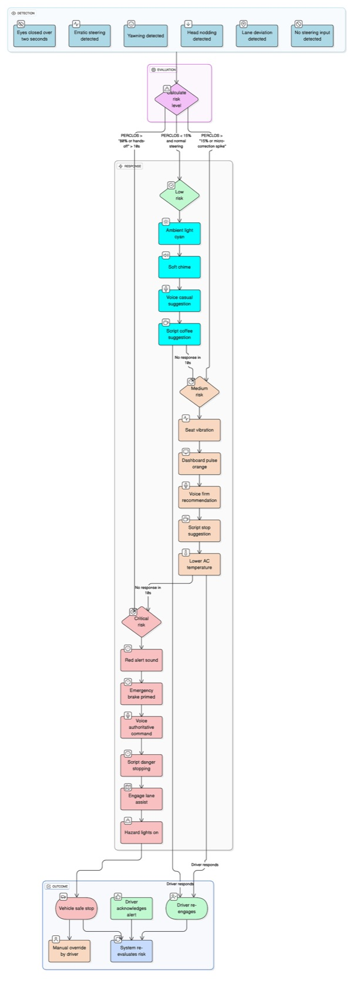
Move the signals, watch OTTO decide
The score is the camera (50%), the voice (20%) and the telemetry (30%). Thresholds: 30% mild, 50% moderate, above 75% critical. This is a simplified version of the logic in the prototype.
Inputs
The full flow, with alerts and takeover, is in the prototype.
Suggest, recommend, command
The tone, the buttons, the color and the intervention change with the level. Same voice, three different degrees of urgency.
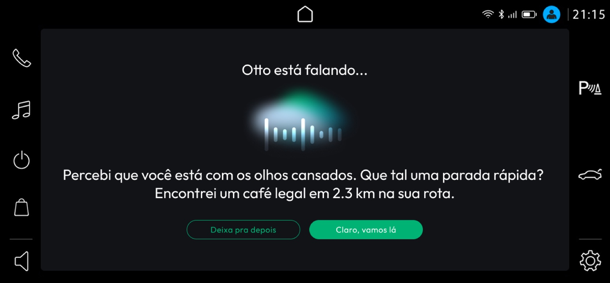
Level 1 · 30 to 50%
Mild tiredness
Detection
- Occasional yawns on camera
- Slightly slurred voice
- 2 continuous hours without a break
OTTO says
“I noticed your eyes look tired. How about a quick stop? I found a nice café 2.3 km ahead on your route.”
The car does
- Air conditioning drops 2°C, a light thermal shock to raise alertness
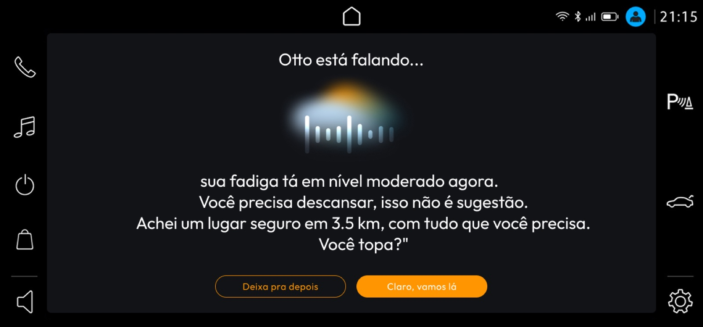
Level 2 · 50 to 75%
Moderate fatigue
Detection
- PERCLOS above 0.8 s, repeated
- Frequent steering corrections
- Monotone voice and 5 hours at the wheel
OTTO says
“Your fatigue is at a moderate level now. You need to rest, this is not a suggestion. I found a safe place 3.5 km away with everything you need. Are you in?”
The car does
- The steering wheel vibrates softly
- Non-essential notifications are silenced to cut cognitive load
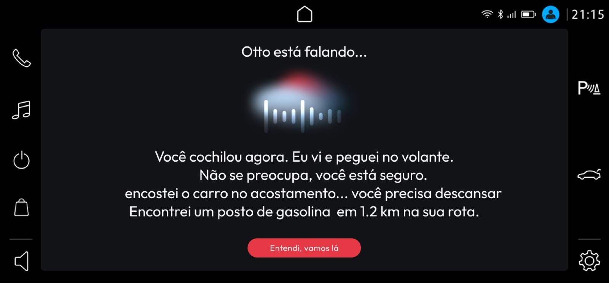
Level 3 · above 75%
Critical fatigue
Detection
- Micro-sleep: eyes closed for 3 s or more while moving
- Head dropping forward
- Lane departure seen by the front camera
OTTO says
“You just dozed off. I saw it and took the wheel. Don’t worry, you’re safe. I pulled over to the shoulder... you need to rest.”
The car does
- A deep, pulsing tone: urgent, not irritating
- Wheel and seat vibrate hard, if equipped
Level 3, phase 2: active control
Only on Level 2+ vehicles with ADAS, when the driver does not answer in 5 seconds.
- Controlled deceleration
- Lane Keep Assist centers the car
- Hazard lights on
- Looking for a safe shoulder
- Full stop with the parking brake on
After the stop
The event is logged locally, for the driver’s own insights.
Optional emergency contact
A family member or fleet center, configured by the driver, can be notified.
The driver stays in charge
Camera and voice are opt-in, and the settings page centralizes privacy and contacts.
“VW Safety”: a mini style guide built for safety
Built in Figma with variables. It follows the brand identity, which uses the proprietary VW Head and VW Text fonts. For licensing and reproducibility I used Outfit, a geometric font that keeps the modern, legible feeling of the brand.
Aa
colorAlertLevel1#00B374Level 1 · mild
Aa
colorAlertLevel2#FF9500Level 2 · moderate
Aa
colorAlertLevel3#E63946Level 3 · critical
Gradual, not alarmist
Each level raises the urgency of voice, color and haptics together, never only the volume.
High-contrast mode
Critical scenarios switch to a mode with white borders and brighter colors, for the worst light and the shortest glance.
Never color alone
Every state also changes the icon, the wording and the intervention, so color-blind drivers are covered.
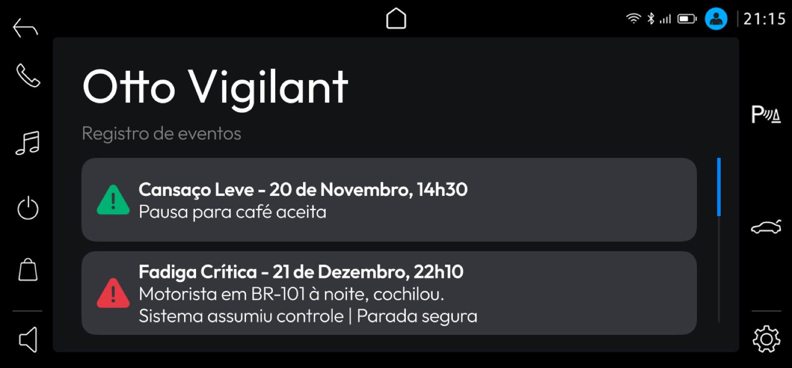
Beyond a static Figma: a React proof of concept
I do not have access to the real VW Play environment, so I rebuilt the operating system from scratch in a simulated web environment, replicating the visual architecture and the micro-interactions of the original interface. The goal was to validate the fluidity of the transitions between normal and levels 1, 2 and 3, and the legibility of the safety components in a real rendering engine, making sure the entry and exit animations do not cause extra distraction.
React + Vite
Agile dev environment and modular components, in Atomic Design.
Tailwind CSS
Recreates the VW design system with precision, with native cockpit dark mode.
Framer Motion
Orchestrates the 60 fps UI: the OTTO wave pulse and the alert transitions.
React Router
Navigation between “Your apps”, “Vehicle” and “Navigation”.
Try the system, rebuilt
Beyond the React POC, I rebuilt the system as a component explorer and as a prototype that simulates a tired driver. Both run in the browser, in English and Portuguese.
Storybook OTTO Vigilant
Foundations plus 11 components and patterns with live controls: alerts by level, risk gauge, intervention ladder and the takeover. Switch between night and high-contrast mode.
Open the StorybookVW Play prototype
Simulate the driver with sliders or quick scenarios. The risk engine fires the three alerts, OTTO speaks them with a real voice, and at level 3 it takes the wheel and narrates the stop: “I’m parking.”
Try the prototypeHow it would be measured in production
This is a conceptual case, so these are targets, not results. They are the numbers I would track.
Safety
micro-sleep events on long stretches (over 3 h).
lane departures compared to vehicles without a DMS.
Acceptance
of suggested breaks accepted, versus 20% in traditional alert systems.
of drivers turning the system off, versus 30 to 40% in irritating systems.
Satisfaction
of OTTO Vigilant, measured in-car after 30 days of use.
agree with “I feel safer with OTTO”.
Targets for a concept, not measured results.
Same project, built with AI in the loop
The research, the problem and the decisions are mine, from the original case. For this page, the Storybook and the prototype I worked with Claude Code: I defined the system and the behavior, it generated and iterated on the code, and I reviewed every screen.
Tokens from the Figma
The alert colors and the type scale came from the Figma variables, then became CSS variables with a runtime level token.
Components from the spec
Each component was described by its behavior (what changes per level), generated, and tested in the Storybook.
A prototype as a test
The prototype runs the risk engine logic, so the thresholds and the timing of the takeover can be felt, not just read.
People review everything
AI does the heavy lifting. Decisions about safety, tone and privacy stay with the designer.
AI does the heavy lifting. People own the decisions.
A proposal of value, in a market that is about to require it
OTTO Vigilant is more than a UX case. It combines the leadership of VW in connectivity with active safety technology (DMS + AI), a differentiator in a market where fatigue systems become mandatory in Europe from 2026 and are expected in Brazil.
Research in depth
Regulation, technology and human behavior, together.
Design with empathy
Gradual interventions that respect autonomy.
Prototype with rigor
From Figma to React, validating end to end.
Think in systems
Connecting sensors, AI, UX and vehicle hardware.
What I would do next
Test with real drivers
Put the prototype in front of drivers, in a simulator, and measure acceptance of the tone and of the takeover.
Calibrate the thresholds
The 30, 50 and 75% thresholds are a hypothesis. They need real fatigue data to be tuned.
Adapt it to Brazil
Roads, night driving, rideshare shifts and the way people talk in Brazil change the tone of voice and the stop points.
What it was built with
Next step
Want to talk about this project?
I can walk you through the research, the risk engine and how AI changed the way I build. I am also open to working together or mentoring.
OTTO Vigilant · independent concept · 2026© 2026 Gabriel Moreira